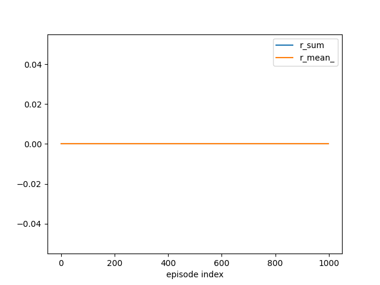

Note
Go to the end to download the full example code.
Lecture 5: Monte Carlo Methods
# # Lecture 5: Monte Carlo Methods
import numpy as np
import rldurham as rld
# ## Learning a Policy with Monte Carlo Sampling
# Our goal is to learn an optimal policy from randomly sampled trajectories. Our strategy is to estimate Q-values (state-action values) based on the samples and get the policy from the Q-values.
# ### Essential Components
# We can **define the policy** based on the Q-values by either deterministically picking an action (not a good idea) or giving equal probability to all actions with maximum value. Additionally, we can add uniform random actions with probability epsilon (exploration).
def epsilon_greedy_policy(Q, epsilon, deterministic):
p = np.zeros_like(Q)
ns, na = Q.shape
for s in range(ns):
Qs = Q[s]
if deterministic:
max_action = np.argmax(Qs)
p[s, max_action] = 1
else:
max_actions = np.argwhere(Qs == Qs.max())
p[s, max_actions] = 1 / len(max_actions)
p[s] = (1 - epsilon) * p[s] + epsilon / na
return p
# Given a policy, we can **sample episodes** in the environment, that is, complete trajectories that reach the goal state (or run over the time limit).
def sample_episode(env, policy):
observation, info = env.reset()
done = False
trajectory = []
while not done:
action = np.random.choice(env.action_space.n, p=policy[observation])
new_observation, reward, term, trunc, info = env.step(action)
trajectory.append((observation, action, reward))
observation = new_observation
done = term or trunc
return trajectory, info
# From the trajectory, we can **compute returns** (discounted cumulative rewards) for each state along the way, which is most efficiently done in reverse order.
def compute_returns(trajectory, gamma):
partial_return = 0.
returns = []
for observation, action, reward in reversed(trajectory):
partial_return *= gamma
partial_return += reward
returns.append((observation, action, partial_return))
return list(reversed(returns))
# Frome the returns, we can now **update the Q-values** using empirical averages as a Monte Carlo approximation of the expected return. This can be done using exact averages or exponentially smoothing averages (with constant learning rate alpha).
def update_Q(Q, ns, returns, alpha):
for obs, act, ret in returns:
ns[obs, act] += 1 # update counts
if alpha is None:
alpha = 1 / ns[obs, act] # use exact means if no learning rate provided
Q[obs, act] += alpha * (ret - Q[obs, act])
else:
old_bias_correction = 1 - (1 - alpha) ** (ns[obs, act] - 1)
new_bias_correction = 1 - (1 - alpha) ** ns[obs, act]
Q[obs, act] = Q[obs, act] * old_bias_correction # undo old bias correction
Q[obs, act] += alpha * (ret - Q[obs, act]) # normal update as above
Q[obs, act] = Q[obs, act] / new_bias_correction # apply new bias correction
# ### Some Examples
# Let's look at different scenarios starting with an empty lake and going through different hyper-parameter settings:
#
Empty Lake
epsilon, gamma, det, alpha = 0.0, 1.0, True, None
A deterministic policy without exploration typically does not learn at all because it never reaches the goal state.
epsilon, gamma, det, alpha = 0.0, 1.0, False, None
A non-deterministic policy without exploration samples a successful episode at some point but then “clings” to it without exploring further, so is likely to get stuck and never find the optimal policy.
epsilon, gamma, det, alpha = 0.1, 1.0, False, None
A little exploration produces much more stable results and will eventually find the optimal policy. Without any discount it will not have a preference to shorter (or even finite) paths.
epsilon, gamma, det, alpha = 0.5, 0.9, False, None
Considerable exploration and some discount produces very stable results with a preference for shorter paths, but the policy is far from optimal due to exploration.
%% 8x8 Lake ——–
Things are more difficult because there are more “pockets” to explore.
%% Exploration Noise —————–
- Run epsilon, gamma, det, alpha = 0.3, 1.0, False, None on small custom environment (slippery=True) for 1000 episodes
Currently optimal policy takes the short-but-risky path because everything is also risky with exploration noise.
- Switch to epsilon, alpha = 0.2, 0.01 and run for another 2000 episodes
Now the long-but-safe path is preferred as it should be (with gamma=1)
# set up environment
env = rld.make(
'FrozenLake-v1', # simple
# 'FrozenLake8x8-v1', # more complex
desc = [ # empty lake (start with this as it is most insightful)
"SFFFFFFF",
"FFFFFFFF",
"FFFFFFFF",
"FFFFFFFF",
"FFFFFFFF",
"FFFFFFFF",
"FFFFFFFF",
"FFFFFFFG",
],
is_slippery=False,
# desc=[ # short high-risk versus long low-risk paths with is_slippery=True
# "FFF",
# "FHF",
# "SFG",
# "FHF",
# ],
# is_slippery=True,
render_mode="rgb_array",
)
LEFT, DOWN, RIGHT, UP = 0, 1, 2, 3
env = rld.Recorder(env, smoothing=100)
tracker = rld.InfoTracker()
rld.seed_everything(42, env)
rld.render(env)
# initialise Q values
Q = np.zeros((env.observation_space.n, env.action_space.n))
ns = np.zeros((env.observation_space.n, env.action_space.n), dtype=int)
# different hyper parameters
epsilon, gamma, det, alpha = 0.0, 1.0, True, None # does not learn at all
# epsilon, gamma, det, alpha = 0.0, 1.0, False, None # very instable and gets stuck quickly
# epsilon, gamma, det, alpha = 0.1, 1.0, False, None # more stable but no preference for shorter paths
# epsilon, gamma, det, alpha = 0.5, 0.9, False, None # stable and preference for shorter paths, but non-optimal policy
# epsilon, gamma, det, alpha = 0.3, 1.0, False, None # sub-optimal policy due to exploration noise (on small custom map)
# sample episodes
# n_episodes, plot_every = 1, 1 # one trial at a time
n_episodes, plot_every = 1000, 100 # many trials at once
# epsilon = 0. # force optimal policy
# epsilon, alpha = 0.2, 0.01 # less exploration, some forgetting
for eidx in range(n_episodes):
# epsilon-greedy policy
policy = epsilon_greedy_policy(Q=Q, epsilon=epsilon, deterministic=det)
# sample complete episode
trajectory, info = sample_episode(env=env, policy=policy)
# compute step-wise returns from trajectory
returns = compute_returns(trajectory=trajectory, gamma=gamma)
# update Q values
update_Q(Q=Q, ns=ns, returns=returns, alpha=alpha)
# track and plot progress
tracker.track(info)
if (eidx + 1) % plot_every == 0:
tracker.plot(r_sum=True, r_mean_=True, clear=True)
rld.plot_frozenlake(env, v=Q.max(axis=1),
policy=epsilon_greedy_policy(Q=Q, epsilon=epsilon, deterministic=det),
trajectory=trajectory, draw_vals=True)


- 

# LEFT, DOWN, RIGHT, UP = 0, 1, 2, 3
print("First steps (state, action, reward):\n", trajectory[:3])
print("First returns (state, action, return):\n", returns[:3])
print("Q values for first states:\n", Q[:3])
print("Action counts for first states:\n", ns[:3])
First steps (state, action, reward):
[(0, 0, 0.0), (0, 0, 0.0), (0, 0, 0.0)]
First returns (state, action, return):
[(0, 0, 0.0), (0, 0, 0.0), (0, 0, 0.0)]
Q values for first states:
[[0. 0. 0. 0.]
[0. 0. 0. 0.]
[0. 0. 0. 0.]]
Action counts for first states:
[[100000 0 0 0]
[ 0 0 0 0]
[ 0 0 0 0]]
Total running time of the script: (0 minutes 6.829 seconds)